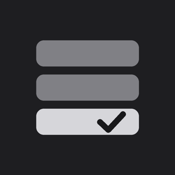

とりあえず、積んでおく。
And Done. は、一本のタイムラインでタスクを管理するアプリです。
やることを思いついたら、とりあえず積んでおく。やるときに開始を押して、終わったら完了。それだけで、終わった時刻とかかった時間がタイムラインに残っていきます。予定表のように未来を細かく決めるのではなく、「この時間に終わった」という事実が積み重なっていくのが特徴です。
時刻を決めてタスクを置けますか?
置けません。And Done. のタイムラインは予定表ではなく、終わったことの記録です。何時にやるかを決めるのはあなたで、アプリは急かしません。
完了を押し忘れました。
完了したタスクを開くと「かかった時間」をスワイプで直せます。時刻の計算は不要です。
機種変更したらデータは引き継がれますか?
現在のバージョンでは端末間の同期に対応していません。アプリを削除すると記録も消えますのでご注意ください。
タスクの記録は、すべて端末の中にだけ保存されます。アカウント登録は不要で、広告も入っていません。